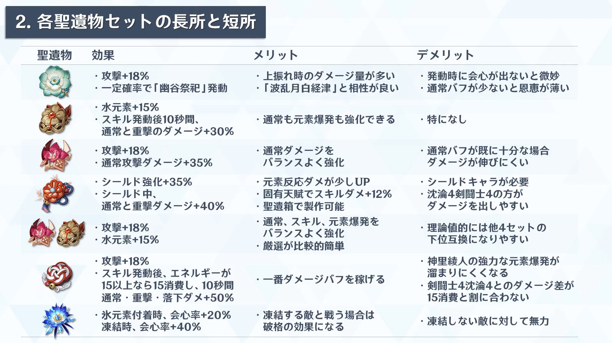
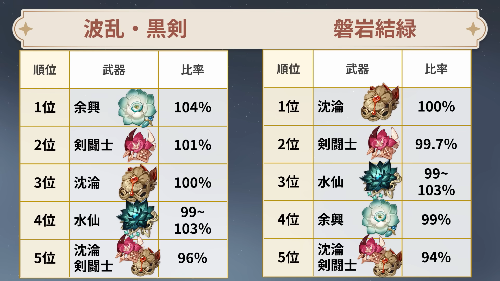
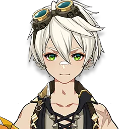
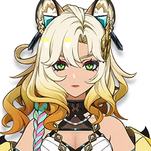
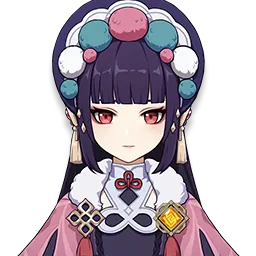
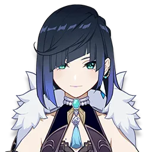
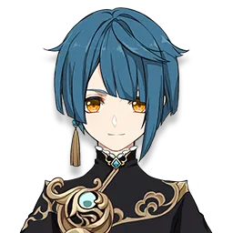
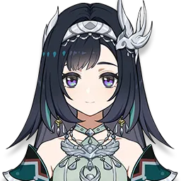

オススメ武器
オススメ聖遺物
 オススメパーティ
綾人ハイパーキャリー
- 
綾人の火力を最大限高められる編成
楓原万葉をシロネンに変えてもよい
少し最大火力は劣るが、フリーナをモナに変えてもよい
爆速綾人

- 
攻撃速度バフを盛りまくって、めっちゃ早い瞬水剣で気持ちよくなる編成
ジンは2凸、雲菫は完凸が必要なので持っている攻撃速度バフもちのキャラを編成に入れよう
ただし、速度バフは63%程度で上限を迎えるためそれ以上は無意味となる
超開花綾人
超開花反応を起こしていく編成
ナヒーダを白朮に変えてもよい
鍾離を夜蘭や行秋にしてもよいが、綾人はその場にとどまって攻撃するため、藍硯やレイラ、 ディオナなどのシールダーがいると快適
ディオナなどのシールダーがいると快適
凍結神里兄妹編成
兄妹で凍結をおこしていく編成
ウェンティを楓原万葉に変えてもよいが、綾人の瞬水剣も綾華の元素爆発も両方ともウェンティで吸い込んだ敵に当たるため、軽い敵が沢山出てくる秘境などではウェンティのほうが快適だろう
フリーナの枠は正直誰でもよいが凍結の邪魔をしないキャラが望ましい
チーム社奉行
社奉行に所属するキャラで固めた編成
絶妙にかみ合ってないのでかなり悔しくも、惜しいパーティ
見ていて少しほっこりするのは間違いないため、推したい